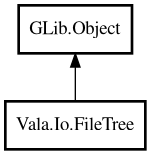

FileTree
Object Hierarchy:

Description:
public class FileTree : Object
High-level recursive directory operations.
FileTree provides traversal, search, copy/sync, and aggregation utilities for directory trees.
Content:
Static methods:
- public static bool copyTree (Path src, Path dst)
Recursively copies directory tree.
- public static bool copyTreeWithFilter (Path src, Path dst, owned PredicateFunc<Path> filter)
Recursively copies directory tree with path filter.
- public static int countFiles (Path root)
Returns number of regular files under root.
- public static bool deleteTree (Path root)
Recursively deletes a tree.
- public static ArrayList<Path> find (Path root, string glob)
Finds files by glob pattern.
- public static ArrayList<Path> findByRegex (Path root, string pattern)
Finds files by regex pattern.
- public static ArrayList<Path> findBySize (Path root, int64 minBytes, int64 maxBytes)
Finds files by size range.
- public static ArrayList<Path> findModifiedAfter (Path root, DateTime after)
Finds files modified after the given date-time.
- public static bool flatten (Path src, Path dst)
Flattens nested files under src into dst directory.
- public static bool sync (Path src, Path dst)
One-way synchronization from src to dst.
- public static int64 totalSize (Path root)
Returns total size of regular files under root.
- public static ArrayList<Path> walk (Path root)
Recursively walks all files under root.
- public static ArrayList<Path> walkWithDepth (Path root, int maxDepth)
Recursively walks files under root up to maxDepth.
Creation methods:
Inherited Members:
All known members inherited from class GLib.Object
- @get
- @new
- @ref
- @set
- add_toggle_ref
- add_weak_pointer
- bind_property
- connect
- constructed
- disconnect
- dispose
- dup_data
- dup_qdata
- force_floating
- freeze_notify
- get_class
- get_data
- get_property
- get_qdata
- get_type
- getv
- interface_find_property
- interface_install_property
- interface_list_properties
- is_floating
- new_valist
- new_with_properties
- newv
- notify
- notify_property
- ref_count
- ref_sink
- remove_toggle_ref
- remove_weak_pointer
- replace_data
- replace_qdata
- set_data
- set_data_full
- set_property
- set_qdata
- set_qdata_full
- set_valist
- setv
- steal_data
- steal_qdata
- thaw_notify
- unref
- watch_closure
- weak_ref
- weak_unref